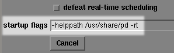
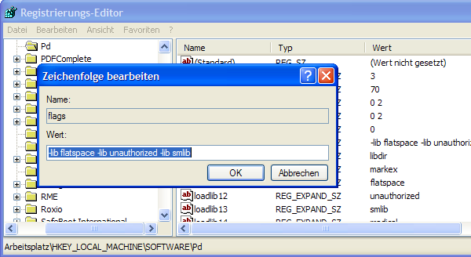

Advanced configuration
Since Pd-Extended is installed with most of the settings, search paths and external libraries already configured, many users won't have to worry about configuring these parts of Pure Data at all. Advanced users, however, may be interested in customizing these settings. The settings which can be changed in Pure Data are the same as those available when starting from the command line:
audio configuration flags:
-r <n> -- specify sample rate
-audioindev ... -- audio in devices; e.g., "1,3" for first and third
-audiooutdev ... -- audio out devices (same)
-audiodev ... -- specify input and output together
-inchannels ... -- audio input channels (by device, like "2" or "16,8")
-outchannels ... -- number of audio out channels (same)
-channels ... -- specify both input and output channels
-audiobuf <n> -- specify size of audio buffer in msec
-blocksize <n> -- specify audio I/O block size in sample frames
-sleepgrain <n> -- specify number of milliseconds to sleep when idle
-nodac -- suppress audio output
-noadc -- suppress audio input
-noaudio -- suppress audio input and output (-nosound is synonym)
-listdev -- list audio and MIDI devices
-oss -- use OSS audio API
-32bit ----- allow 32 bit OSS audio (for RME Hammerfall)
-alsa -- use ALSA audio API
-alsaadd <name> -- add an ALSA device name to list
-jack -- use JACK audio API
-pa -- use Portaudio API
-asio -- use ASIO drivers and API
-mmio -- use MMIO drivers and API
MIDI configuration flags:
-midiindev ... -- midi in device list; e.g., "1,3" for first and third
-midioutdev ... -- midi out device list, same format
-mididev ... -- specify -midioutdev and -midiindev together
-nomidiin -- suppress MIDI input
-nomidiout -- suppress MIDI output
-nomidi -- suppress MIDI input and output
-alsamidi -- use ALSA midi API
other flags:
-path <path> -- add to file search path
-nostdpath -- don't search standard ("extra") directory
-stdpath -- search standard directory (true by default)
-helppath <path> -- add to help file search path
-open <file> -- open file(s) on startup
-lib <file> -- load object library(s)
-font-size <n> -- specify default font size in points
-font-face <name> -- specify default font
-font-weight <name>-- specify default font weight (normal or bold)
-verbose -- extra printout on startup and when searching for files
-version -- don't run Pd; just print out which version it is
-d <n> -- specify debug level
-noloadbang -- suppress all loadbangs
-stderr -- send printout to standard error instead of GUI
-nogui -- suppress starting the GUI
-guiport <n> -- connect to pre-existing GUI over port <n>
-guicmd "cmd..." -- start alternatve GUI program (e.g., remote via ssh)
-send "msg..." -- send a message at startup, after patches are loaded
-noprefs -- suppress loading preferences on startup
-rt or -realtime -- use real-time priority
-nrt -- don't use real-time priority
-nosleep -- spin, don't sleep (may lower latency on multi-CPUs)
All of the Audio and MIDI configuration flags in this list are set using the menus described above. Note that not all settings are available on all platforms (for example, there are no -asio or -mme options on Mac OS X or Linux, nor the -alsa, -oss, -pa or -jack settings on Windows, etc...)
The next most-important configuration options have to do with the external libraries which Pd loads at startup time (and thus which objects you will be able to use), as well as the locations in your file system where Pd can search for these externals and for other resources the program uses to run.
Pure Data uses a system called pdsettings to store all these options and use them every time Pd starts up. The pdsettings can be configured through various menus in the application, as we saw with the audio and MIDI settings. But they can also be configured by other tools, which are specific to each operating system.
We'll start by looking at the built-in menus for Startup and Path, and then we'll look at other methods to change the configuration options.
Startup Flags
OSX : Pd-extended -> Preferences -> Startup
Linux & Windows : File -> Startup

The things we want to pay attention to in this menu are the externals we load, which are listed as "Pd binaries to load (on next startup)", and whether or not we "defeat real-time scheduling".
Under "Pd binaries to load", you can make a list of the external libraries which you have installed on your system which you would like to be available in Pd. You will then be able to run these externals the next time you start Pd. Because you are using the Pd-extended distribution, this section should be completed for you with a list of the externals which come with the distribution.
If you would like to add more libraries to the ones listed, the simplest way is to add them to an existing line of the Startup menu, like so:
Gem:my_new_lib
And then click "Save all settings" and "OK". However, Pd-Extended is still a program which is under development, and this method has been noted to have some problems lately, so you may wish to try the Platform-Specific Configuration Tools below.
If you are running Pd on Linux, you may want to experiment with using "real-time scheduling" to improve the audio quality by allowing Pd faster access to the soundcard. On some systems, however, you must run Pd as the administrator of the system (i.e. "root" or "su") to have permission to do this. To use "real-time scheduling", enter the following in your "startup flags"
-rt

But keep in mind that if Pd overloads or locks up your system by using too much of the processer's resources, it can be very difficult to quit the program when using "real-time scheduling".
Users on Mac OS X should not use the "real-time scheduling" flag, and should click the box which says "defeat real-time scheduling" for better audio quality.
Path
OSX : Pd-extended -> Preferences -> Path
Linux & Windows : File -> Path

Shown here is the Mac OS X menu for setting the Paths. These are the Search Paths that Pd will use to locate external libraries, help patches, and other any patches, fonts, soundfiles, videos ar anything else which you may need while working in the program. If you would like to add more directories to the ones listed, the simplest way is to add them to an existing line of the Path menu, like this:
/Library/Pd:/home/my_name/my_new_path
And then click "Save all settings" and "OK". However, as with the Startup menu, some people have had problems using this method, so you may wish to try the Platform-Specific Configuration Tools below.
Quite a bit of this configuration has been taken care of by Pd-Extended already, so let's look at some real-world examples of when you might want to add a path. One situation would be if you want to use an audio file or a collection of audio files in your patch, but you don't want to have to specify the whole location every time it's needed in any object or message.
So, instead of typing
/home/beaver/my_soundfiles/spoken/boy/geewhiz.wav
or
/home/beaver/my_soundfiles/spoken/girl/golly.wav
you could add
/home/beaver/my_soundfiles/spoken
to your Path, and then call these soundfiles by typing:
boy/geewhiz.wav girl/golly.wav
Another very common situation is when you would like to use a Pd patch you have saved as an abstraction (which essentially treats the saved patch like another Pd object) inside another Pd patch. In this case, you must either have the patch you wish to use as an abstraction saved in the folder as the "parent" patch you wish use it in, or you must add the folder containing the abstraction to your Path. For example the path:
/home/pdfreek/puredata/abstractions/reverb_tools
might contain various kinds of reverb abstractions that the user "pdfreek" created to be reused in other patches. For more information about abstractions, please see the DataFlow Tutorials chapter.
Finally, if you want to compile your own external Pd libraries, or use ones which you have downloaded from the internet, then you need to place the binary files (which end in .pd_linux for Linux, .pd_darwin for OS X and .dll for Windows) in a folder and add that folder to your path, such as:
~/pd/extra
where ~/ means your home directory (i.e. /home/"username" on Linux and /User/"username" on Mac OS X). Please note that in the case of name clashes (where two objects or files have the same name), the one which is loaded last takes precedence over all others. An example of this is the object [counter], which exists in several external libraries, and which has a different function in each one!
Platform-Specific Configuration Tools
Since Pd-extended and the vanilla version of Pure Data really function as separate apps, they each of their own separate files for saving configuration settings. Also, this settings file is saved with a format, name, and location that is appropriate for the operating system you are using. The locations for the Pd settings files are:
Pd-extended
- OS X: ~/Library/Preferences/org.puredata.pd.plist (~ means your home folder)
- Windows: HKEY_LOCAL_MACHINE -> SOFTWARE -> Pd-extended (using REGEDIT.EXE, etc.)
- Linux: ~/.pdextended (~ means your home folder)
Pure Data vanilla
- OS X: ~/Library/Preferences/org.puredata.pd.plist (~ means your home folder)
- Windows: HKEY_LOCAL_MACHINE -> SOFTWARE -> Pd (using REGEDIT.EXE/REGEDIT32.EXE)
- Linux: ~/.pdsettings (~ means your home folder)
Linux
Linux users may edit the file directly via command line applications such as joe, vim, pico or nano, or with whatever other text editing application comes with your distribution:
$ nano /home/derek/.pdsettings
GNU nano 1.2.4 File: /home/derek/.pdsettings
audioapi: 5
noaudioin: False
audioindev1: 0 4
noaudioout: False
audiooutdev1: 0 4
audiobuf: 50
rate: 44100
nomidiin: False
midiindev1: 0
nomidiout: False
midioutdev1: 0
path1: /home/derek/pd/rradical/memento
path2: /home/derek/pd/ix_toxy
path3: /home/derek/pd/berlin
path4: /home/derek/pd/rradical/memento/tutorial
path5: /home/derek/workshop_patches
path6: /usr/local/lib/pd/doc/5.reference
path7: /usr/local/lib/pd/extra/xjimmies
npath: 7
standardpath: 1
verbose: 0
loadlib1: pool
loadlib2: iemlib1
loadlib3: iemlib2
loadlib4: iem_mp3
loadlib5: iem_t3_lib
loadlib6: OSC
loadlib7: zexy
nloadlib: 7
defeatrt: 0
flags: -alsamidi -rt
[ Read 31 lines ]
^G Get Help ^O WriteOut ^R Read File ^Y Prev Page ^K Cut Text ^C Cur Pos
^X Exit ^J Justify ^W Where Is ^V Next Page ^U UnCut Txt ^T To Spell
Remember that if you add a new path or loadlib, then you will need to give it a number higher than the last existing one, and you will need to change the npath or nloadlib to the number of new paths or loadlibs you have added. In the above pdsettings, to add the loadlib pdp, you would have to add/change the following:
loadlib8: pdp nloadlib: 8
OS X
OS X users may wish to try using the Property List Editor.app, which can be installed from the XCode Tools or Server Tools CDs available for free from Apple:
http://developer.apple.com/tools/xcode/
Here is the Property List Editor, with the org.puredata.pdextended.plist file open:

You can click directly in the Value field to change a value, or use the New Sibling button to add a new line.
The command line utility defaults can also be used. The following line in the terminal lists all the pdsettings in org.puredata.pdextended.plist:
defaults read org.puredata.pdextended
The following command can be used to write a new line to pdsettings:
defaults write org.puredata.pdextended loadlib30 test
and this command can be used to delete one line from pdsettings:
defaults delete org.puredata.pdextended loadlib30
In this case, loadlib30 represents the next possible line that could be added to load a library (29 libraries are loaded already), and test represents a hypothetical library which we add to the startup in the first case using the write command, and remove from the startup in the second case by using the delete command. For more information about defaults, type:
defaults --help
Windows
Windows users may also use the REGEDIT program to edit their pdsettings. This program comes with the Windows operating system, and can be located under the name REGEDIT.EXE or REGEDT32.EXE (Windows XP or newer). Please note: manually editing the Windows Registry files using a text editor instead of REGEDIT is generally considered unsafe, since errors here can disrupt the entire operating system! Those interested in more details about the Registry should read:
http://en.wikipedia.org/wiki/Windows_Registry#Editing
